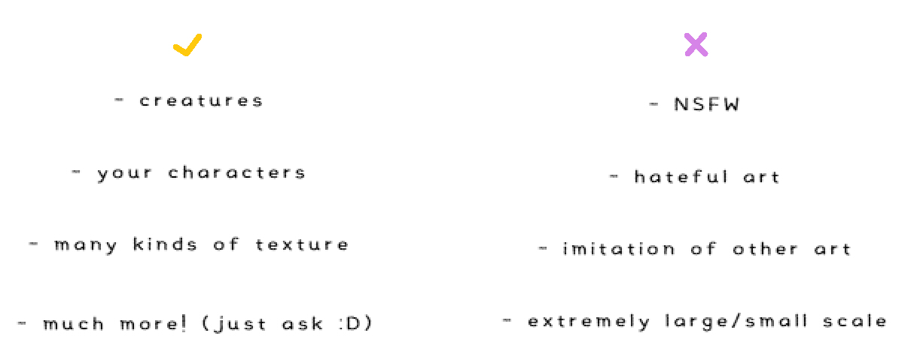
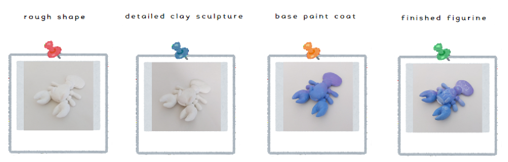
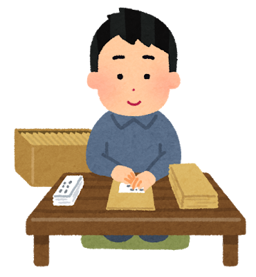
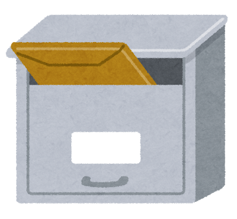
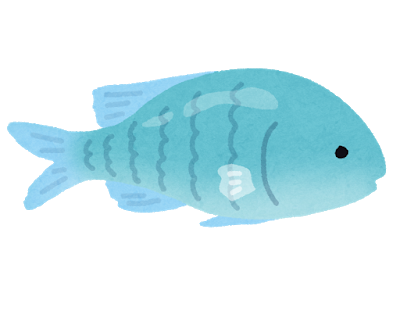
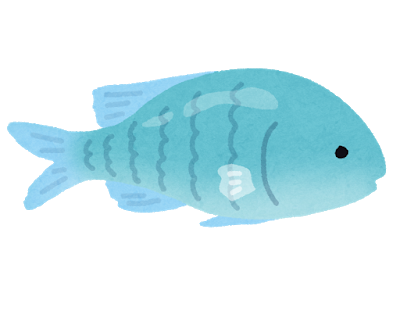

do's and don'ts
these are general guidelines for commissioning me :)
Some of these preferences aren't set in stone,
so feel free to ask if you want something wacky!

The process:
First, you send me an email containing what you want for your figurine
(see the
commission section for details).
Now we will work out a price to match the complexity of the character.
If you are ready to proceed, I will email you asking for the payment and information needed to ship to you.
(see prices
and samples
to estimate how much your figurine would cost ahead ^__^)

Next I'll notify you when I begin working on the figurine!
Once I get the rough shape down, I'll send you a picture for you to approve.
If you want corrections, I'll make them no problem and send you another picture after! >:D
With each step of the figurine-making process, I'll send you an update picture to approve!
Here you can see what each progress photo will be like:

Once it's finished, I'll package the figurine with care...

and then ship it off to you :D

 
